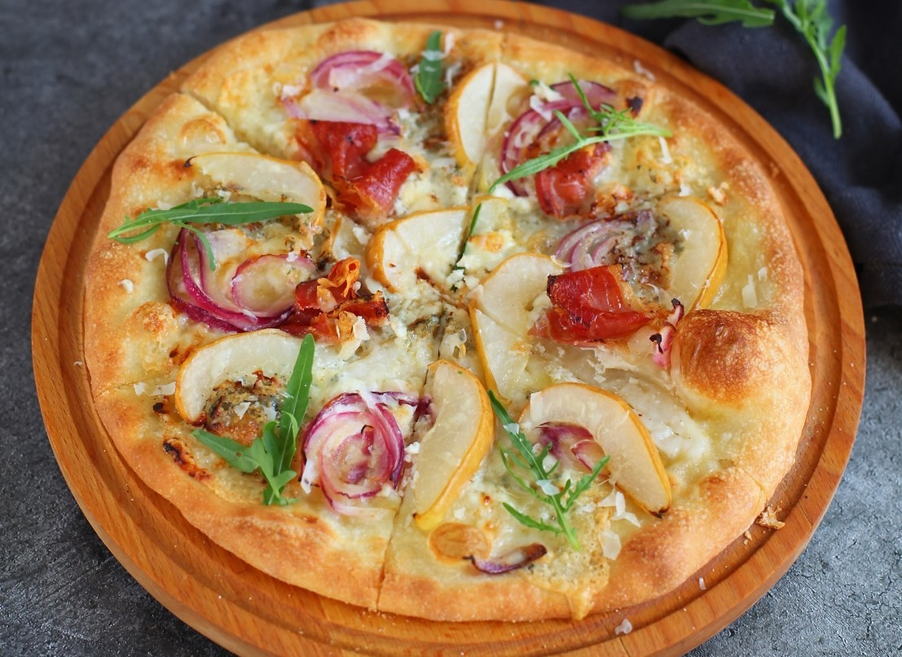

Вкус этой пиццы во многом зависит от сыра и груш. Я рекомендую выбирать сыры с мягким, не слишком интенсивным вкусом, например козий сыр, а груши — спелые, но не слишком. Если не нравится сыр с голубой плесенью, его можно заменить бри или камамбером.
В этом рецепте я использую тесто для пиццы с добавлением молока. Молоко делает тесто более воздушным и легким, на мой взгляд, идеальным для пиццы, котоая печется в обычной духовке, а не в печи. Конечно, пиццу лучше всего выпекать на пекарском камне — благодаря ему получаются идеальные мякиш и корочка. Если камня нет, не страшно, без него тоже получится вкусно.
Тесто можно приготовить накануне, дать неполную расстойку и убрать в холод до следующего дня. Холодная расстойка сделает мякиш и корочку еще прекраснее. Перед раскатыванием дать ему согреться в течение 40–60 минут.
Противень или лопату для пиццы по желанию можно присыпать не мукой, а манной крупой, она придаст интересную текстуру готовой основе пиццы.
Груши и лук для этой пиццы можно карамелизовать двумя способами: либо смазав небольшим количеством смеси меда и масла прямо перед выпеканием, либо обжарив в этой смеси на сковородке. Первый способ хорош, когда груши достаточно спелые (перья лука рекомендую нарезать потоньше), а второй — когда груши поплотнее (нарезайте перья лука потолще). Карамелизовать в сковородке нужно буквально 1–2 минуты, поскольку они еще будут готовиться в духовке.